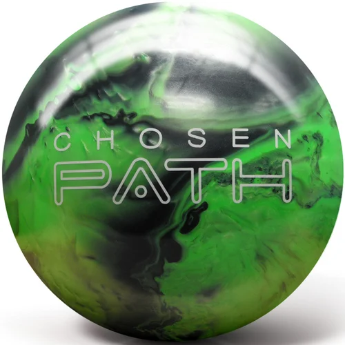
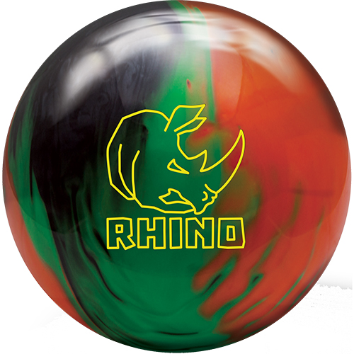
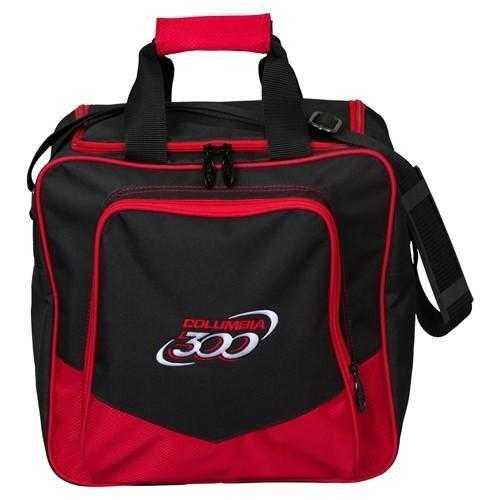

Equitment
Bowling Balls
Brunswick Tzone Deep Space Bowling Ball

(Click image to learn more)
Great for Beginners who bowl straight or even as a spare ball.
It's always good to have a spare. And with T-Zones being so affordable, you can! Just pick your favorite color. Or two ... Or three.
This ball comes at a cost of around $45.
Black Widow Pink

(Click image to learn more)
Great for intermediate to pro players.
The ever-popular Gas Mask asymmetric core is back and ready to claim more pins as it's prey. Providing a high flare potential and strong backend bite, this ball will be versatile for all styles of bowling.
this ball comes at a cost of around $170.
Chosen Path
(Click image to learn more)
Want a ball that got good reaction but dont have 200 dollars then the Chosen Path is for you it even comes with free ball cleaner and a microfiber pad.
Pyramid technology is the culmination of years of research, observation, core and coverstock analysis. With ever changing variables within the sport of bowling, (e.g., lane conditions, ball speed, rev rate) this technology allows any bowler, from stroker to two-handed, to achieve peak performance on medium to heavy oil conditions.
this ball comes at a cost of around $100.
Brunswick Rhino Black/Green/Orange Pearl
(Click image to learn more)
Heres another great ball for beginners or someone who isnt looking to empty there pockets.
The traditional light bulb core shape delivers a medium RG/medium differential rating, perfectly suited for a benchmark motion down the lane with power and control.
it also comes in colors like Purple/Pink/White, Red/Black/Gold & Cobalt/Aqua/Teal
This ball comes at a cost of around $80.
Womens Shoes
ELITE WOMENS ATHENA PINK BOWLING SHOES

(Click image to learn more)
Elite Athena Black and Pink Bowling Shoes - Women who love pro brands choose Elite.
These are a great pair of shoes from beginner to pro.
These shoes come at a price of around $55 but are on sale as of 9/22/2020 for $25
KR CHILL LIGHT GREY PINK WOMENS BOWLING SHOES

(Click image to learn more)
The KR Strikeforce Chill is durable, lightweight KR Kanvas™ upper that is stylish yet easy to clean and maintain.
These are another great pair of shoes for women who are just starting or even experienced
the shoes come at a price of around $43 but are on sale as of 9/22/2020 for $15
Mens Shoes
DEXTER RICKY IV MENS BBOWLING SHOES

(Click image to learn more)
These are great shoes for begginers or even Amature to pro!
These shoes come at a price of about $40.
KR STRIKEFORCE MENS AVIATOR GREY

(Click image to learn more)
Keep your eyes to the horizon with your bowling game with the KR Strikeforce Mens Aviator bowling shoes!
These shoes come at a price of about $53
Bags
ELITE DOUBLE ROLLER BLACK BOWLING BAG

(Click image to learn more)
The Elite Basic Double Roller in Black has a simple design paired with great craftsmanship which equals a fantastic bag.
This bag comes at a price of about $40
ELITE SE TRIPLE TOTE PLUS ROYAL BLUE BOWLING BAG

(Click image to learn more)
This Elite SE Triple Tote Royal Blue Bowling Bag is one cool piece of equipment. This bowling ball bag is as stylish as it is durable, and it holds all of your important gear: three bowling balls, bowling shoes, and whatever accessories you may need.
This bag comes at a price of about $60
COLUMBIA WHITE DOT SINGLE TOTE RED
(Click image to learn more)
This is Great For leuge bowlers who dont plan on carrying mor than one ball with them and maybe a few accessories
This bag comes at a price of about $26